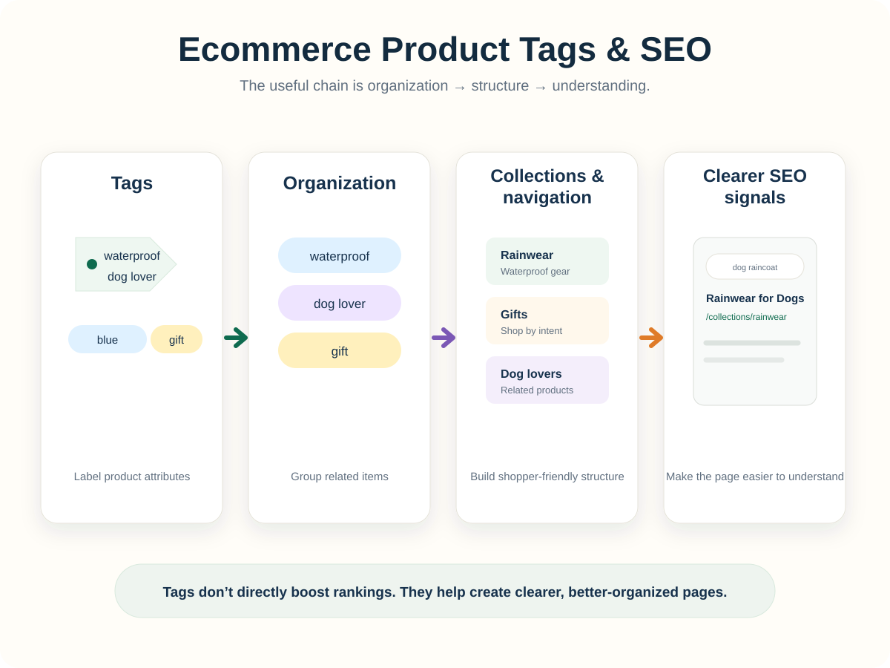

Product tags are easy to overlook.
They’re usually a few words tucked behind the scenes of your store: linen, summer, dog mom, blue, gift, waterproof.
But those little labels can do a surprising amount of work.
For a Shopify store, tags primarily help you organize products internally. Used thoughtfully, they can also help you build collections and store structures that are easier for shoppers and search engines to understand.
First, what are product tags?
Product tags are descriptive labels attached to products in your store.
Unlike your product title or description, tags usually aren’t written as customer-facing marketing copy. They’re primarily used to classify products based on information that’s useful to your business.
For example, a ceramic mug might have tags such as:
Those tags might describe what the product is, who it’s for, when someone might buy it, or how you want to organize it.
That gives tags two potential jobs. Inside your store, they help organize, filter, automate, and manage products. Across your storefront, they can help you create collections and navigation that make related products easier to find.


How tags help organize your Shopify store
This is where tags do most of their heavy lifting.
As your catalog grows, product names alone aren’t enough to keep everything organized. Imagine trying to manage hundreds of products and quickly identify which ones are summer products, gifts under $50, made from recycled materials, part of a campaign, available for wholesale, or included in a holiday promotion.
Tags give you a flexible classification system around the things that actually matter to your business.
Tags can help power collections
One of their most useful applications is grouping related products.
For example, several products might share the tag rainwear. That gives you a consistent way to identify products that belong together.
Depending on how your Shopify store is configured, those attributes can help you build collections and merchandising rules instead of sorting every product manually. That becomes increasingly valuable as your catalog grows.

Tags make catalog management faster
You might tag products based on different kinds of information:
Not every tag needs to be something a customer would ever search for. Some tags exist purely to help you run the store. And that’s completely fine.
So, do product tags help SEO?
Not directly.
Adding the tag organic cotton shirt to a product does not automatically tell Google that your page should rank when someone searches for “organic cotton shirt.”
Search engines primarily evaluate the pages and information they can access on your storefront. That includes things like product titles, descriptions, headings, URLs, internal links, image alt text, collection pages, structured product information, and the overall organization of your website.
A product tag sitting quietly inside Shopify isn’t automatically an SEO signal.
But tags can still help support SEO indirectly. And that’s where they become much more interesting.

Tags can help you create stronger collection pages
Suppose your store sells outdoor apparel. You have a group of products associated with rainwear.
That organization might lead you to create a dedicated collection for rainwear.
Now you have something search engines can actually visit and understand: a real page on your website.
That collection can have its own URL, page title, description, and products. Each of those pieces helps explain what the page is about.
What’s a URL, and why does it matter?
A URL is simply the web address of a page. For example: yourstore.com/collections/rainwear.
The part after your store name helps describe where the page lives and, sometimes, what the page contains.
/collections/84729 vs. /collections/rainwear
A person looking at the second URL can immediately make a reasonable guess about what’s on the page. Search engines can use that context, too.
A descriptive URL by itself will not suddenly make your page rank at the top of Google. Think of it as the label on a filing cabinet. The label helps identify what’s inside. What’s actually inside the cabinet still matters much more.

SEO works better when the pieces agree with each other
This is the bigger idea.
Imagine a collection with the URL /collections/rainwear. Its page title is Rain Jackets & Waterproof Outerwear. Its description explains that the collection includes lightweight waterproof jackets and rainwear for hiking, commuting, and unpredictable weather.
The products on the page are actually rain jackets and waterproof outerwear.
Now several different parts of the page are reinforcing the same topic. The URL says rainwear. The title says rain jackets and waterproof outerwear. The description explains what kind of rainwear shoppers will find. The products match the topic.
That consistency gives both shoppers and search engines a clearer understanding of what the page is about.
That’s much stronger than simply attaching the tag rainwear to ten products and stopping there.
Tags can help improve internal linking and discoverability
Search engines also learn about your website by following links between pages.
A product sitting alone in your catalog has less context than one connected to useful collections and categories.
For example, a waterproof hiking jacket might appear within Women’s Outerwear → Rain Jackets → Hiking Gear.
Those connections help shoppers browse naturally. They also help search engines understand how your pages relate to each other.
Think of your website as a subway system. Product pages are individual stations. Collections and navigation are the train lines connecting them. Tags can help you decide which stations belong on which lines.
Tags can help uncover long-tail SEO opportunities
Tags can also reveal patterns across your catalog. This becomes especially useful for long-tail keywords, which are simply more specific searches.
dog clothes is broad. waterproof raincoat for corgis is much more specific.
So are reflective dog jacket for hiking and small dog winter coat with harness opening.
Now imagine your catalog contains products tagged with waterproof, reflective, small-dog, and hiking.
Individually, those tags help you organize products. Together, they might reveal something more interesting: maybe you have enough relevant products to create a collection around Waterproof Hiking Gear for Small Dogs.
The tags didn’t create the SEO opportunity. They helped you spot it.

The collection page, its content, and the products within it are what turn that idea into something customers can actually discover through search.
Don’t turn tags into a keyword junk drawer
Because tags are easy to create, stores often accumulate hundreds of nearly identical versions.
You might eventually discover dog gift, dog gifts, gift for dog lovers, dog lover gift, gifts-dog, and dog-gift.
Congratulations. You have created tag soup.
The bigger problem isn’t that Google will punish you for it. It’s that the tags stop being useful to you.
If one person uses dog-gift and another uses dog gifts, products that should belong to the same group may become fragmented.
A better approach is to establish a consistent vocabulary, choose one preferred structure, and reuse it.

Internal tags and SEO topics don’t always need to match
This distinction matters.
Your internal organization and your SEO strategy serve different purposes.
You might have a tag called q4-promo. That could be extremely useful for managing a seasonal campaign. But almost nobody is going to Google “q4 promo” while shopping for your product.
Meanwhile, gifts for dachshund owners could represent a useful search topic.
That doesn’t mean every relevant product needs a tag containing that exact phrase. Instead, your existing product attributes might help you identify enough relevant items to create a collection or landing page for that search intent.
Internal organization can support SEO. It doesn’t need to imitate it.
Where Penstack fits in
This is why Penstack treats tags as part of the larger product-content system rather than an isolated box to fill out.
A product listing isn’t just a title followed by a paragraph. Its product title, description, tags, collections, product attributes, and search intent should all make sense together.
Penstack uses the context surrounding a product to make it easier to create relevant tags while you’re building or refining the listing.
Instead of staring at an empty tag field wondering whether you should type shirt, funny shirt, funny t-shirt, graphic tee, or gift, you’re starting with the product itself and organizing it intentionally.
That cleaner structure makes the store easier to manage now. It can also give you better building blocks for collections and search opportunities later.
The simplest way to think about tags
Product tags have one primary job and one useful side effect.
The tag itself isn’t the SEO strategy. It’s part of the scaffolding that makes a better SEO strategy possible.
The takeaway
Tags organize the store. Collections turn that organization into customer-facing structure. SEO benefits when that structure clearly explains what your products and pages are about.
No tiny SEO fairy living inside the tag field required.
Ready to create better product content?
Penstack helps you write, organize, and optimize product listings, including tags, descriptions, collections, and the pieces in between.